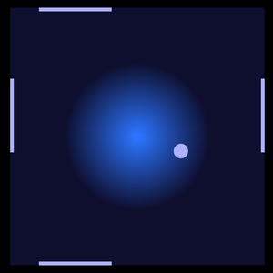
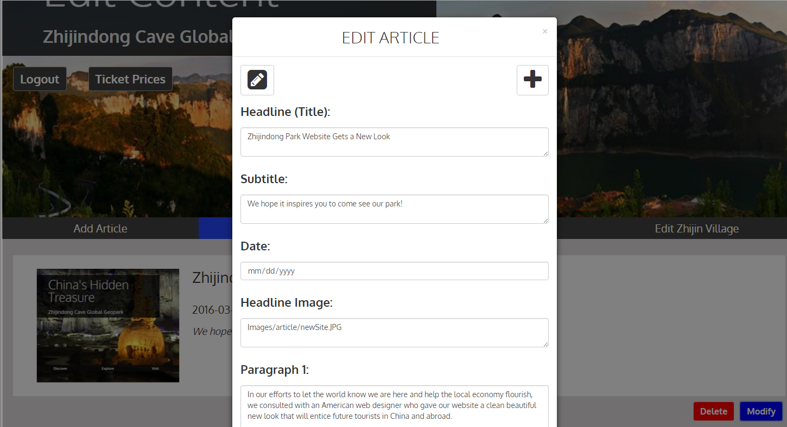

— Web Design Portfolio —
Pong 2.0
.png)

Pong 2.0 was a personal development project allowing me to explore my recently gained knowledge of javaScript functions, scope, and execution contexts. In Pong 2.0 I experienced first-hand the importance of knowing your scope and understanding which functions manipulate which variables.
Website Features
- Coded in 12 Days
- Bootstrap for responsive layout
- HTML 5 scrolling marquee for basic instructions/humorous comments
- JavaScript to draw paddles/ball, count score, and update player's best score
- Keeps track of best score and resets score on button press allowing user to challenge a friend
Experience Gained
- Game Logic and Algorithm Design
- Responsive Game Layout Design
- Advanced javaScript Techniques
- Use of HTML 5 Canvas Element
- javaScript troubleshooting
- Practical use of execution contexts and scope variables
- javaScript
- Bootstrap
Zhijin Geopark Tourism Site



The Zhijin Geopark is a cave system in Guizhou, China that gained UNESCO Global Geopark status in 2015. Despite its global geological status, few Westerners know about the Geopark and their director of marketing asked if I could design a Western-focused ad website aimed at generating interest in the park.
Website Features
- Goal Completion: Ongoing Project
- Fully responsive both mobile friendly and lage screen designs
- Administrator CMS for easy upload of park news, literature and ticket packages
- JavaScript to show a new hero image each time site loads
- JavaScript to alter how many images are shown based on screen size and user input
- Angular JS to change background images based on selected tab
Experience Gained
- Angular JS
- SQL
- PHP
- javaScript
- Search Engine Optimization
- User Interface Design
- Google Analytics tracking
- International business collaboration
- Web based project management
- Content Management System Building